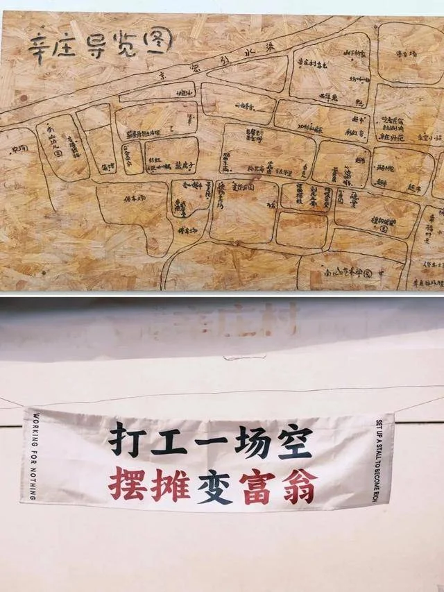
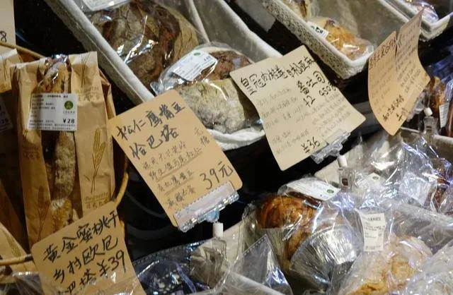
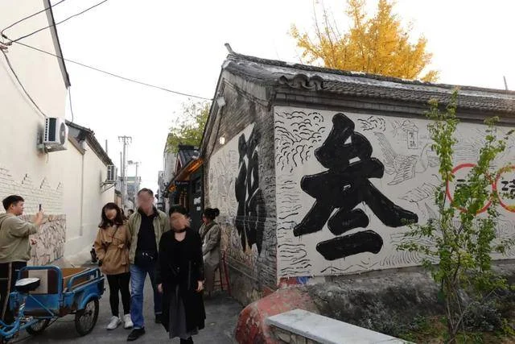
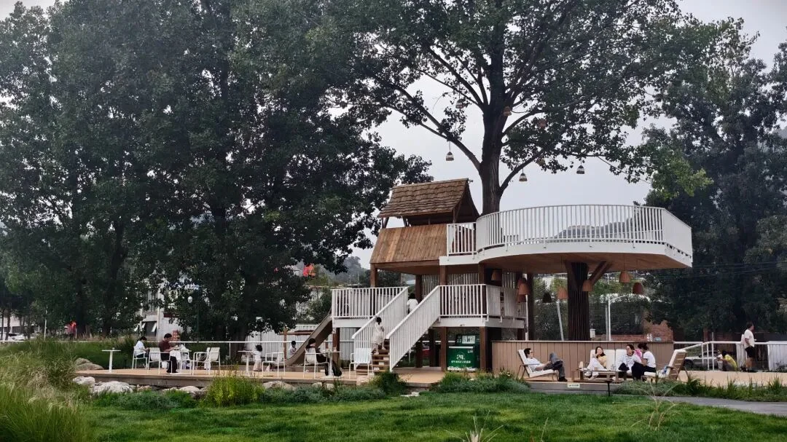
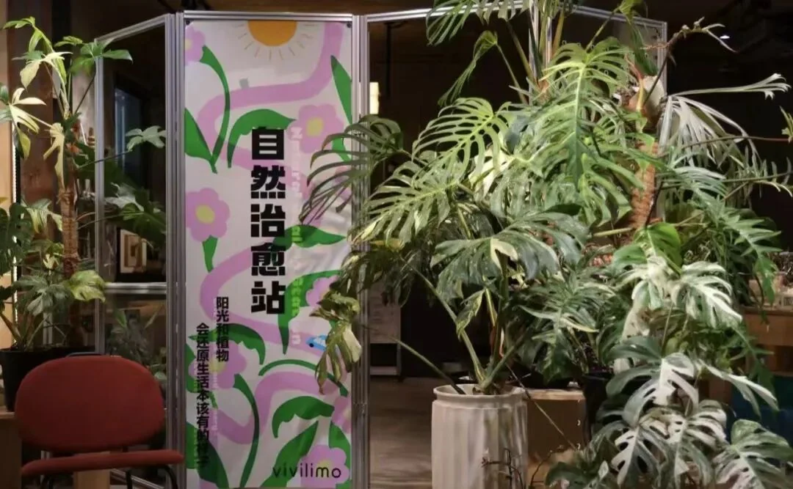

福爷牛肉面
热午餐 · 少折腾优先
在哪：兴寿镇辛庄村西；具体门牌未核
吃喝与用途：大块牛肉面、老北京扁豆焖面、柴火大锅炖。想快速吃到热主食，可先问面食，不默认大锅炖出餐快。
价格口径：2025-10-21报道人均39元；历史参考，非国庆报价
营业与风险：先问午市、排队与清淡少盐做法。营业时间、电话未核；若排长队直接换店。
2026年10月1—2日 · 五道口出发 · 怀柔2天1晚
第一天沿途逛一站，下午小院桌游；第二天睡晚些，水长城慢游，吃顿西餐、短散步后返京。


| 时间与区域 | 2026/10/1—10/2 · 怀柔九渡河 |
|---|---|
| 同行与节奏 | 适合带长辈与学龄儿童；下午桌游，次日晚起，台阶可跳过 |
| 住宿锚点 | 北京遇花园民宿 · 九渡河镇撞道口村113号 |
| 自驾 | 五道口 → 兴寿辛庄村（条件停靠）→ 遇花园；次日西水峪正规景区 → 黄花城村西餐 → 五道口。公里数与车程未核准，以导航为准 |
| 活动强度 | 村内短步行 + 景区半日；不是完整环湖徒步，也不是长城穿越 |
| 核心取舍 | 只加一站轻松逛村与一顿西餐；不叠加大景点，不熬夜，为后续假期留体力 |
第一天不是直奔民宿等入住：先在路线上选一站有咖啡、烘焙和手作小店的村落，走走坐坐、吃过午饭再进山。下午把时间留给遇花园，喝茶、桌游、休息，晚上在住处吃饭，不再开车赶场。
第二天不抢开园：睡晚一些，慢慢吃早餐、退房，再去正规水长城。游览只取省力段，结束后留出坐下休息的空当，西餐早晚饭和饭后短散步作为收尾，而不是继续追加景点。
民宿身份与地址由Trip.com公开条目确认；具体房型、国庆餐饮与桌游空间需店家确认。商户字段见页末。
先让民宿发定位与停车入口；第二天按景区给出的售检票口导航。不要把“撞道口长城”“黄花城水库”或餐厅背后的野长城当成正规景区。景区与餐厅之间安排开车转场，不按“就在旁边”理解为步行可达。
去程在导航里添加辛庄村作途经点，与直达民宿比较；若绕行或堵车额外增加约30分钟以上，就取消这站，改到撞道口村短散步。这个阈值是舒适度取舍，不是实测距离。返程晚饭后不可避免可能夜间行车，司机不喝酒、不疲劳驾驶；雨雾或不熟悉夜间山路时，应提前用餐离山，散步改回城后。
推荐它做一个60—90分钟的轻停靠：看看墙绘、手作小店，买面包，找家有座位的咖啡店歇脚；午饭尽量吃有热主食的正餐，不全靠零食。它在昌平兴寿，是否顺路取决于当天导航路线，不称“零绕路”。
2025年媒体实访和人民日报海外版报道转载均记录创客街、田野东市与烟火西市；Time Out旧文提供咖啡、烘焙与手作氛围参考。只逛一小段，不要求三个区域全部走完，停车按现场指引。
国庆市集尚未核实：旧资料写周末市集，2026年10月1日是周四，不能默认假日加开；店铺也各自营业。出发前核实开放，若不开或停车难，就跳过，不专程等集市。未取得可审计的点评评分/评论量，不冠以“高分必逛”。
这里不是一条统一售票、统一营业的景区商业街，而是乡村生活里的咖啡、烘焙与创作小店。Time Out 2024年实访记录了访咖啡、福叁、云朵朵厨房及书画空间；下列是据此设计的轻量玩法，不是已预订的国庆活动。


图片用来理解村落与小店气质，版权归原作者；店铺归属依据原报道章节，不从杯具或面包外观猜店名。具体吃喝选择与核验入口见页末商户区。
建议时段不是预约。遇堵先缩短或取消辛庄停靠，保住下午入住与休息；不为补齐时间表赶车。
| 建议时段 | 安排与执行方式 | 时长 |
|---|---|---|
| 约09:00 | 五道口出发，以导航估时倒推辛庄停靠；饮水、点心、晕车用品随车带。 | 导航车程＋缓冲 |
| 约10:30—12:00 | 辛庄村创客街短逛、咖啡与烘焙，长辈可随时坐下休息；店铺不开或停车难就取消。 | 1—1.5h |
| 约12:00—13:00 | 就近午餐；不排长队。饭后开车前往遇花园，按实时路况移动入住时间。 | 餐1h＋导航车程 |
| 约14:00—15:30 | 下午抵达、入住、休息。平台公示入住14:00—22:00起，实际以订单/店家为准。 | 1—1.5h |
| 约15:30—17:30 | 桌游主时段：自带UNO、拉密或一款熟悉的轻桌游，选一两款就好；每局间歇休息，长辈可参加也可喝茶。不默认店里有桌游。 | 1.5—2h |
| 约18:00 | 民宿晚餐，提前确认菜单和预订；饭后可在院落继续一小局，不另加驾车出游。 | 1—1.5h |
| 睡前 | 确认次日晚早餐、景区开船与西餐预约；收好随身物品，正常休息。 | 0.5h |
09:00左右起床，不抢开园。先问清民宿早餐收餐时间，必要时前一晚备好早餐；睡晚不等于酒店会延长供餐。官网有黄金周8:00—18:00的公示，仍以当日通知为准，尤其确认末班船。晚起会遇到更多客流，就用缩线来换舒适，不硬补完整游线。
| 建议时段 | 安排与执行方式 | 时长 |
|---|---|---|
| 09:00—10:30 | 起床、早餐、整理行李、退房装车；不预设延迟退房，也不必午间折返民宿。 | 1.5h |
| 10:30起 | 导航至西水峪正规景区入口；途中或入园前吃简便午餐，别空腹逛到下午。 | 导航车程＋停车0.5h＋餐0.5h |
| 约12:00—15:00 | 水长城省力游，A/B线二选一。看水、乘船、拍照、坐下休息；不走完整登城环线。 | 2.5—3h |
| 15:00—16:30 | 出园、洗手间、补水、转场黄花城村。余下时间坐着歇脚；早结束就早吃，不为了凑时刻硬等。 | 含导航转场的1—1.5h缓冲 |
| 约16:30—17:45 | 西餐早晚饭：The Verse候选，须提前确认10月2日对外供餐、厨房时段及座位；意面、披萨等以当日菜单为准。 | 1—1.25h |
| 约17:45—18:15 | 饭后短散步，限餐厅许可公共区域或确认有人车分隔、照明的村内路段；没有合适路线就改回城后散步。不沿安四路车道、水库边或野长城走夜路。 | 0.25—0.5h |
| 约18:00—18:30 | 返五道口。目标不要太晚到家，为后续假期留体力；预留拥堵和休息，不承诺到家时刻，若导航偏晚先压缩等待和散步。 | 返程预留2—3h+ |
正规入口 → 大坝方向 → 交通游船到湖心半岛 → 开放区域缓步与休息 → 优先乘船返回。官方线路介绍将“大坝坐船到半岛”列为适合老人孩子的轻松休闲线；官网给出的单程约6—7分钟只是航行参考，不含排队。先确认上坝台阶、登船条件及往返航线，不能据“有船”推断全程无障碍。
仅在工作人员确认开放的情况下，走大坝/上坝路—长城豁口—跨库桥方向的平缓开放段；随时原路折返，不要求走到半岛。官方完整近路线单程约2公里/40分钟是历史参考，不等于长辈步速，也不等于当前全段可走。建议每走20—30分钟检查体力；若排船超过约30分钟，直接减项。这是家庭舒适度规则，不是客流预测。
在正规开放区域寻找长城与水交会的视角；拍“桥、船、城墙”三种结构，想一想桥与城墙各解决什么问题。观察落叶和果实，不采挖、不砸石、不从城墙取砖；临水始终由成人近距离陪同，乘船穿救生衣。
以下来自2026-09-28直接读取的景区票务公示，不是锁定国庆订单价。游船与快艇是不同项目，儿童适用及票价单位购票前确认。
| 项目 | 官网公示 / 本次口径 |
|---|---|
| 成人门票 | 60元；两位普通成人120元 |
| 学龄儿童 | 半价30元；6周岁以上至18周岁政策，带有效证件 |
| 长辈门票 | 符合免票证件条件可免；非京籍60周岁以上符合政策者半价30元；不满足优惠条件按60元。不是“有老人就一律免票” |
| 四人大门票合计 | 150 / 180 / 210元，分别对应长辈免票 / 半价 / 全价 |
| 游船 | 单程25元、双程45元；快艇单程30元、双程55元。是否运营、线路及儿童政策另核 |
| 住宿、餐饮、停车、油费 | 未取得目标日期实时报价，不编总价；用实际房费 + 餐饮预算 + 门票及选购船票 + 用车成本相加 |
老人优惠须看证件：官方2026年6月7日公告的长期政策列有北京通养老助残卡、北京市有效居住证等条件；临行电话逐项确认。门票优惠不自动延伸到船票等二次消费。
建议9月30日晚核验；本页截至9月28日的资料不能替代10月1—2日实时天气、交通和运营通知。下列勾选仅在当前页面有效，不上传个人信息。
地址：北京市怀柔区九渡河镇撞道口村113号。打开Trip.com原页核房型、订单与餐饮 →
已核公开配套：平台列中式早餐、中菜/烧烤餐饮；公示入住14:00—22:00起、退房12:00前。提前入住、国庆供餐、儿童加床与四人入住资格均需单独确认。
本次安排：10月1日晚餐在住处，10月2日晚餐留给周边西餐。民宿菜单与早餐收餐时间先问清；同时问儿童不辣餐与老人易咀嚼菜品。
点评评分 / 评论量 / 人均 / 榜单：未取得可审计字段，留空；不把酒店平台分数当点评分数。桌游自带，公共空间需店家确认。
预订风险：照片展示公共空间，不代表具体客房面积、隔音、采光或无台阶条件。让店家发实际房型与进房路线照片；国庆取消规则、房费和餐费以确认订单为准。
不必挨家打卡：热午餐优先问福爷牛肉面或百年花园；想坐久些选蓝房子；云朵朵买下午点心，咖啡另挑一家。以下是候选，不额外占用入住与桌游时间。
多数菜单、门牌与人均来自昌平区新闻中心官方账号2025-10-21吃货地图，2026-09-28读取原文。人均是历史报道值，不是实时菜单或国庆报价；各店国庆营业均未电话确认。大众点评评分、评论量、榜单、团购字段未取得，不编星级。
热午餐 · 少折腾优先
在哪：兴寿镇辛庄村西；具体门牌未核
吃喝与用途：大块牛肉面、老北京扁豆焖面、柴火大锅炖。想快速吃到热主食，可先问面食，不默认大锅炖出餐快。
价格口径：2025-10-21报道人均39元；历史参考，非国庆报价
营业与风险：先问午市、排队与清淡少盐做法。营业时间、电话未核；若排长队直接换店。
云南米线 · 绿植庭院
在哪：兴寿镇辛庄村；地图搜完整店名百年花园
吃喝与用途：云南小锅米线。想坐在绿植庭院里吃碗热主食，可作为午餐首选之一；先问能否少辣、不辣。
价格口径：2025-10-21报道人均45元；历史参考，非国庆报价
营业与风险：绿植庭院是报道特征，不保证当天室外座位和天气；营业时间、电话未核。
塞北风味 · 坐下来吃正餐
在哪：兴寿镇辛庄村43号院
吃喝与用途：筋头巴脑小牛肉锅、坝上白蘑炒柴鸡蛋、冰激海棠果。适合愿意多留些午餐时间的一桌合餐。
价格口径：2025-10-21报道人均82元；历史参考，非国庆报价
营业与风险：带长辈先问牛肉软烂度、出餐时间及室内座；不把炖锅硬塞进快停靠。营业时间、电话未核。
烘焙 · 桌游点心补给
在哪：兴寿镇辛庄村幸福时光西北角；旧文描述在主街路北
吃喝与用途：全麦核桃面包、雷神包、芝麻贝果等见报道；适合买一点带去民宿，不当作保证有热饭的餐厅。
价格口径：2025-10-21报道人均54元；不等于单个面包售价，非现价
营业与风险：北京市外办2025年报道亦列出云朵朵面包坊。提前问10月1日开门与出炉时间；食物过敏仍需店家核原料，不能仅凭素食标签判断。
公益咖啡 · 坐下休息
在哪：兴寿镇辛庄村45号（2025年报道地址）
吃喝与用途：美式、燕麦拿铁、气球面包。店铺有听障伙伴参与服务，点单耐心沟通，可用文字，不把店员当作拍照对象。
价格口径：2025-10-21报道人均37元；历史参考，非现价
营业与风险：北京市外办2025年报道交叉确认店铺。咖啡与点心不等于正餐；营业时间、电话未核。
咖啡 · 银杏小院
在哪：兴寿镇辛庄村298号（2025年报道地址）
吃喝与用途：澳白、冰博克dirty、紫苏桃子美式等见报道；季节特调不保证10月供应。适合逛累后坐一会儿。
价格口径：2025-10-21报道人均48元；历史参考，非现价
营业与风险：Time Out 2024年实访也记录福叁与小院。国庆营业、座位与停车仍需确认。

咖啡 · 认识村子的起点
在哪：昌平兴寿辛庄村；旧文建议以访咖啡作入村检索锚点，门牌未核
吃喝与用途：咖啡、阅读与聊天氛围见2024年实访，完整菜单未核。不把店铺位置当作已确认公共停车场。
价格口径：人均未核
营业与风险：国庆营业、停车入口、无咖啡因饮品及厕所先确认；适合小坐，不以此承担全家热午餐。
西餐晚饭：先确认The Verse；7·COFFEE是需要进一步核店的披萨备选。换口味：yuan art东南亚菜；不坚持西餐可问荷塘味道或新京熹涮肉。只喝咖啡：如沐看桥景、高嶺搭自然观察、vivilimo看绿植，三选一就够。
商户存在的证据，不等于国庆营业保证。未核实时车程，不把平台附近距离当导航距离；景区出口、黄花城村、二道关村、石湖峪村需按实际定位开车转场。除The Verse外未取得完整可审计评分、样本、人均与现菜单，各项明确留空；不做高分榜排名。
位置与电话：九渡河镇黄花城村34号；平台公示电话 18614026356。与西水峪正规水长城景区不是同一地点，需开车转场。携程餐厅原页与菜单线索 · 大众点评2021年体验帖。
为什么放这里：公开条目确认西餐、咖啡和长城山景的组合，适合作为景区后的坐下来休息点；旧点评提到门前停车和西式简餐，但不据此保证2026年国庆营业或停车位。
菜单线索：肉酱意面、蘑菇牛肉披萨、鲜虾沙拉、香煎三文鱼等见携程条目，实际供应与价格以店家当日菜单为准。司机只喝无酒精饮品。
评分与价格口径：本轮读取携程餐厅页为5/5、4条点评、用户反馈人均104元；评价样本少且年代较早，不作为当前高分保证或国庆报价。大众点评商户评分、当前人均、榜单与套餐均未核，不混用两平台数据。
营业与散步限制：Trip.com与旧游记所示营业时间不一致，故不抄作确定时间，必须电话确认厨房及非住客用餐。店后有长城景观≠有安全夜游步道；饭后只走店家确认开放的短段，不走公路肩、水库边、河堤或未开放长城。
若不营业 / 无位：先在出发前确认下列备选中的一家；若山里均未确认，就返城吃西餐。清单不是让当天挨家碰运气。
西餐线索 · 披萨与咖啡
在哪：二道关村店；具体门牌未核。携程The Verse页的附近餐厅栏显示距该店约1.8km，不是景区车程
吃喝与用途：果木柴窑披萨、咖啡来自店名线索；具体口味与正餐菜单尚未取得。
价格口径：人均未核
营业与风险：已核附近店铺索引及5条点评，但没有独立店页、电话与实时营业。先取得具体定位并确认晚市，未确认前不作保底，不冒充已订餐厅。
特色正餐 · 长城景观
在哪：怀柔官方水长城美食线路内；具体门牌与自驾距离未核
吃喝与用途：官方报道确认东南亚融合菜与长城景观；未核到可审计现菜单，不杜撰冬阴功、咖喱等具体菜。
价格口径：人均未核
营业与风险：适合想换口味的特色晚饭，不等同于西餐。来源为2024-08-30官方报道；先确认是否仍营业、散客晚市、菜品辣度与停车。
京郊中餐 · 庭院正餐
在哪：九渡河镇黄花城村村委会东700米（历史报道地址）
吃喝与用途：板栗红烧肉、炸小河虾见文旅北京推荐；有荷塘、白墙黛瓦庭院的历史描述，秋季不保证荷花景观。
价格口径：人均未核
营业与风险：适合改吃中餐时整桌用餐。电话来自2022-09-30文旅北京报道，需先核是否有效和国庆晚市；不是未经电话确认就能执行的保底。
历史公示电话：18612616695（拨通后先核店名、分店与营业）
京味涮肉 · 热乎正餐线索
在哪：水长城西水湾店；携程附近栏显示距The Verse约2.5km，非驾车测距
吃喝与用途：北京涮肉来自店名；具体锅底、菜品、人均及儿童用餐条件未核。
价格口径：人均未核
营业与风险：已核具体分店出现在平台附近商户栏，但不是已核营业承诺。先确认门牌、电话与晚市，未确认不直接导航碰运气。
桥边咖啡 · 甜点休息站
在哪：九渡河镇安四路黄花城大桥旁；不是西水峪景区入口
吃喝与用途：草莓/蓝莓拿破仑、白塔草莓、牛角包、手打香水柠檬茶见历史报道；适合下午茶，不能默认提供完整西餐晚饭。
价格口径：人均未核
营业与风险：2022年文旅北京报道给地址电话，2024年怀柔官方美食线路交叉确认。先核2026国庆营业、室内座与停车；只看桥景，不沿公路肩散步。
历史公示电话：13263263357（拨通后先核店名、分店与营业）
亲子咖啡 · 虫博馆楼上
在哪：九渡河镇石湖峪村，璞之谷森林度假区内，自然界·虫博馆楼上
吃喝与用途：2026-09-27北京怀柔官方发布提到板栗红茶咖啡、户外长城景观座位。适合喜欢自然观察的人选作一站。
价格口径：咖啡人均、虫博馆票价均未核
营业与风险：虫博馆和咖啡厅是不同业态，需确认是否分别收费、讲解/手作预约、楼梯及长辈进出条件；若加虫博馆，应缩短其他游览，不塞进晚餐后。

绿植主题 · 咖啡与慢休息
在哪：九渡河镇二道关村；具体门牌未核
吃喝与用途：2026-09-27现场报道记录热带绿植、咖啡与植物主题民宿。适合更想看绿植、安静坐一会儿的人，不作为已核正餐餐厅。
价格口径：人均未核
营业与风险：须问是否接待非住客、咖啡供应时段、低消/预约及停车；不默认可以随意进入民宿私区。
